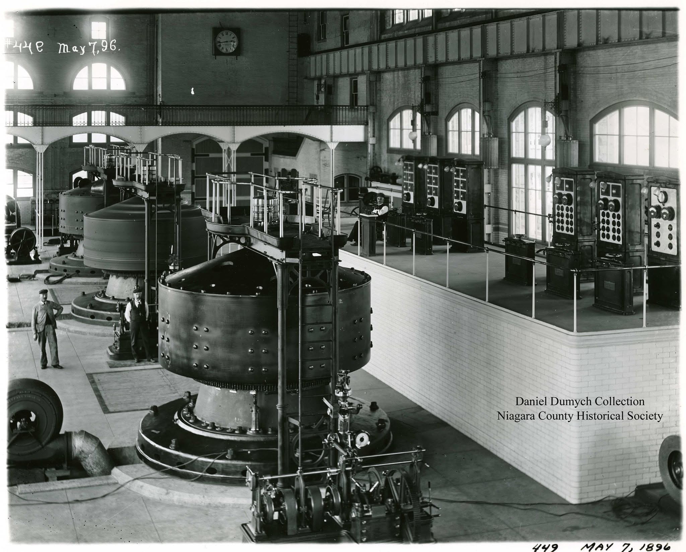
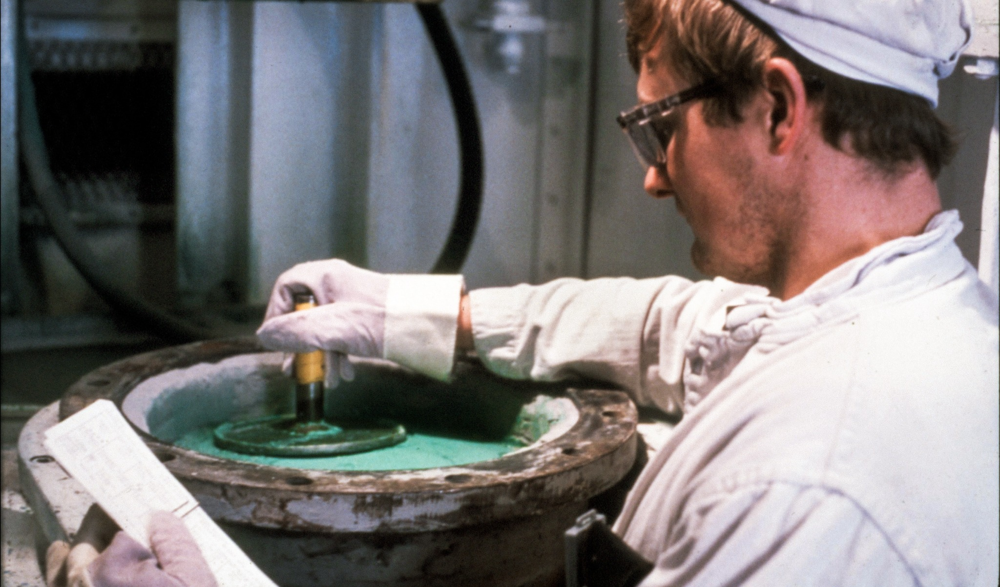
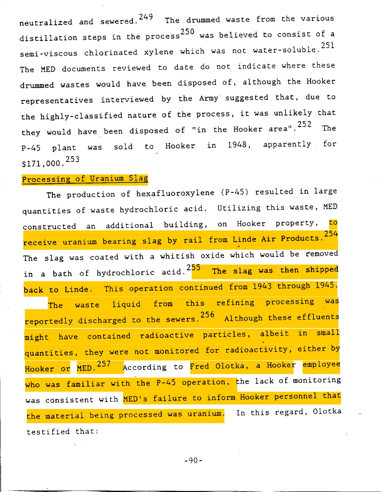
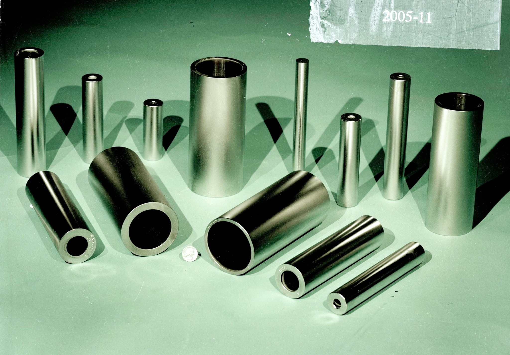
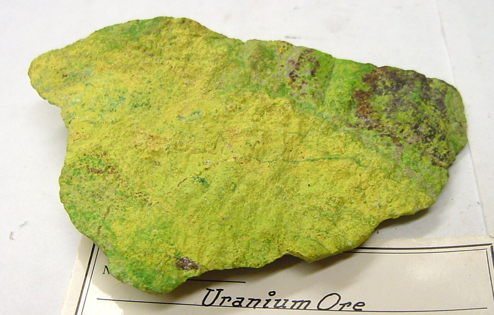
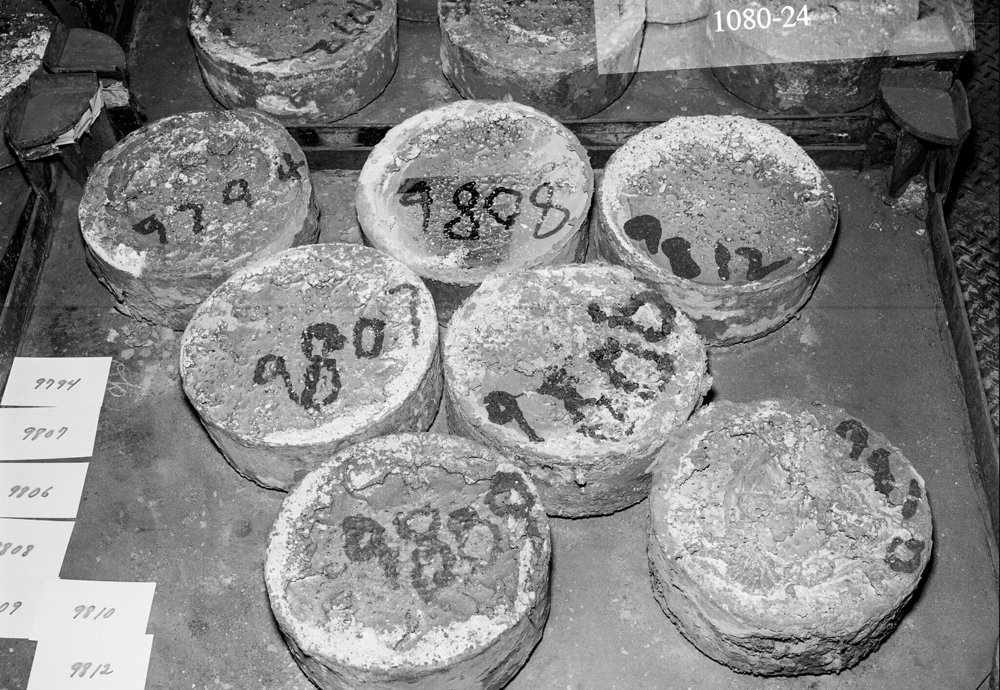
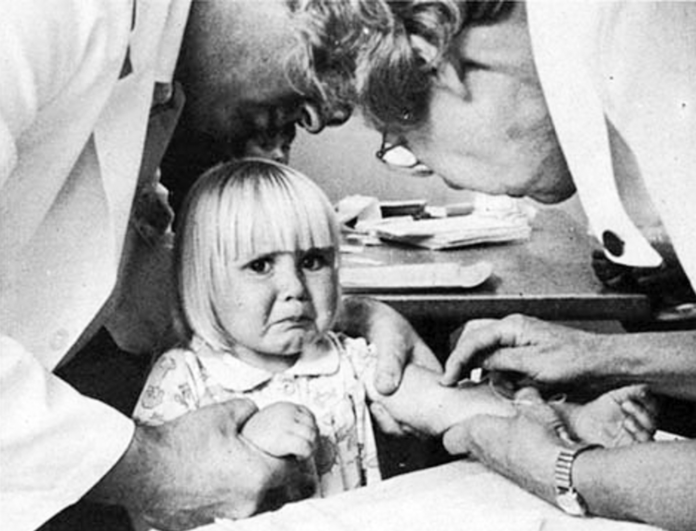
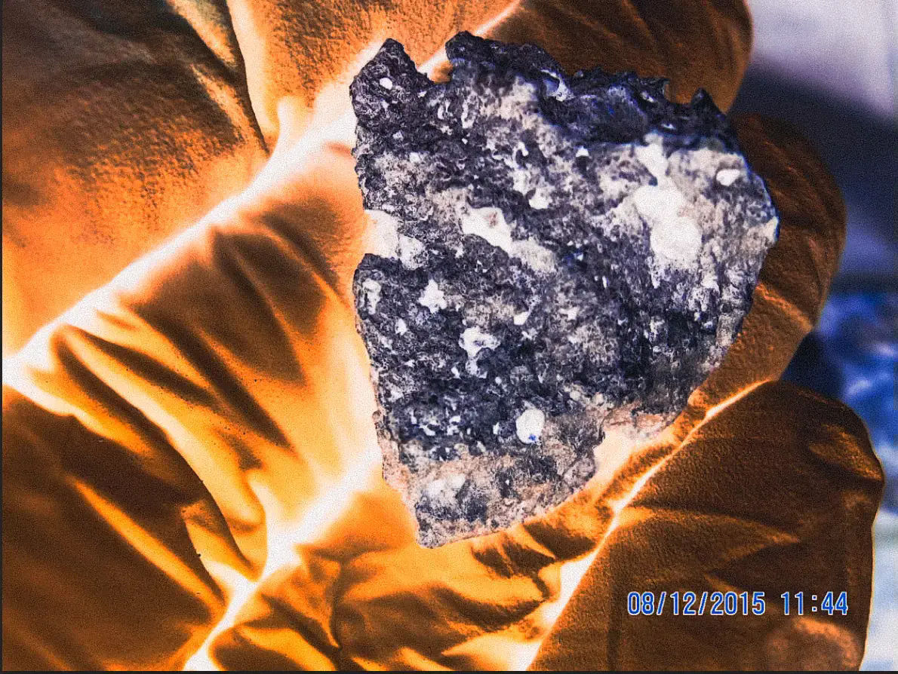
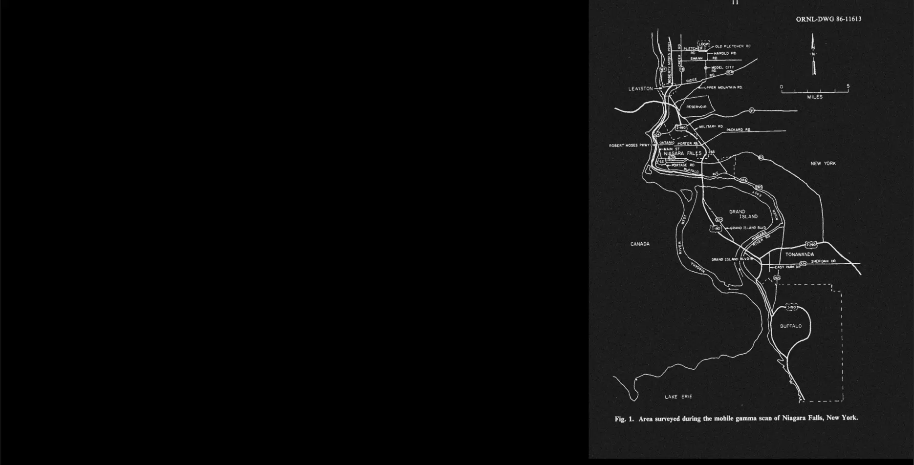

Driving through America’s Honeymoon Capital, Niagara Falls, one might hear the roar of the waterfalls, but this roar can’t silence the echoes of a buried secret: this city is heavily radioactive. Niagara Falls’s involvement in the Manhattan Project and the nuclear buildup that followed during the Cold War left a radioactive scar on the region. For thousands of years, this area will face the consequences of this contamination.
The origin of this American tragedy is rooted in what attracts tourists year after year: its waterfalls. Niagara Falls has long been a source of cheap and abundant hydroelectric power. In 1895, the Adams Power Station became the world’s first large-scale alternating-current power plant, supplying the city’s factories with cheap, abundant, reliable electricity.
Adams Power Station and the surrounding industrial landscape
Origins1896
Inside Adams Power Station

Adams Power Station · May 7, 1896 · Daniel Dumych Collection, Niagara County Historical Society
Origins1895–1942
Electrochemistry +electrometallurgy
This new supply of electricity opened a new era of metal production and electrochemical discovery. Electric furnaces could reach temperatures exceeding 7,000 degrees Fahrenheit, enabling chemical changes in materials that had previously been impossible.
Hooker produced chlorine and caustic soda. Linde produced industrial gases. Electromet manufactured specialized alloys and became the nation’s largest producer of uranium metal. Vanadium strengthened steel. Carborundum pioneered the synthetic abrasive that transformed industrial grinding and cutting. These were not ordinary factories.
Trinity test · July 16, 1945 · U.S. Department of Energy / Wikimedia Commons · Public domain
Leslie R. Groves · Director of the Manhattan Project

Uranium tetrafluoride · “green salt” · U.S. Department of Energy

03
Uranium recovery
At Hooker, uranium-bearing slag was treated with acid; the unmonitored liquid waste went to the sewers.
Processing of uranium slag · Hooker · 1943–1945

Uranium metal rods · final product

Uranium ore · Shinkolobwe, Belgian Congo · collected 1965

From green salt to uranium metal
Driven by the urgency of World War II and the atomic bomb project, this region became the nation’s leading center for processing and refining much of the uranium needed for the bomb. The principal contractors operated their own laboratories, where scientists worked across the production process to extract as much uranium as possible—not only by recovering it from residues, but also by improving refining, conversion, reduction, and fabrication. The federal government maintained offices within the major plants, placing its representatives directly inside the industrial network. General Leslie Groves cultivated close ties with regional factory owners, valuing their commitment to confidentiality and the protection of sensitive information. That secrecy exposed thousands of workers to radioactive materials. Niagara’s atomic role did not end with the war: it continued throughout the Cold War, including Bell Aircraft’s development of RASCAL, the U.S. Air Force’s first air-launched nuclear missile.
The process
01
Linde Ceramics Plant
Tonawanda, New York · Union Carbide
Before the Manhattan Project, Linde’s ceramics business used uranium compounds to produce black, yellow, green, and brown salts for coloring ceramic glazes. This is the origin of the name Linde Ceramics. That chemical experience is also why the Army selected Linde for large-scale uranium separation.
Linde Air Products was a division of Union Carbide and Carbon Corporation. During the war, its Tonawanda plant processed high-grade uranium ore—much of it mined in the Belgian Congo—through three stages: ore into black uranium oxide (U3O8), black oxide into brown uranium oxide (UO2), and brown oxide into uranium tetrafluoride (UF4). The final product was the green, salt-like powder known as “green salt,” which was shipped by train to Electromet in Niagara Falls.
Electro Metallurgical Company, known as Electromet, was another Union Carbide company. Before uranium, its electric furnaces produced calcium carbide, ferroalloys, tungsten, titanium, and other specialty metals. This high-temperature metallurgical expertise made Electromet suited to convert green salt into uranium metal.
Workers mixed uranium tetrafluoride with magnesium inside a dolomite-lined steel vessel known as a “bomb.” When heated, the mixture underwent a violent thermite reaction. The uranium separated, pooled at the bottom, and was cast into 110–135-kilogram ingots, then recast into billets. The process left uranium-bearing C-1 and C-2 slag.
Before its uranium work, Hooker used Niagara’s cheap hydroelectric power to electrolyze salt into chlorine, caustic soda, and hydrogen. Its products included bleach, water-treatment chemicals, solvents, and other industrial compounds.
Under its Manhattan Engineer District contract, Hooker also manufactured fluorinated and chlorinated organic chemicals. One product, xylene hexafluoride, was known by the wartime code P-45. Although P-45 itself was not radioactive, its production generated waste hydrochloric acid.
Hooker used this acid in a separate uranium-recovery operation, treating C-2 slag delivered from Electromet’s uranium-metal reduction vessels. The slag consisted largely of magnesium-fluoride residue and spent dolomite liners—materials that still retained recoverable uranium. Workers opened and screened the barrels, separated uranium-rich pieces, conveyed the remaining material to digest tanks, treated it with acid, neutralized it with lime, filtered and washed the slurry, and rebarreled the concentrate. The process increased the uranium concentration from roughly 0.2 percent in the incoming material to approximately 1–2 percent in the resulting concentrate.
The recovered uranium concentrate was shipped by rail back to Linde in Tonawanda, where it reentered the production cycle—refined again into green salt and returned to Electromet for conversion into uranium metal. The process then began again.
Bethlehem Steel in Lackawanna and Simonds Saw and Steel in Lockport—the plant later known as Guterl Specialty Steel—formed the rolling and finishing stage of the regional uranium chain. Simonds became the program’s principal rod manufacturer, rolling uranium metal billets into long rods from 1948 through 1956. Bethlehem finish-rolled some bars rough-rolled at Simonds, heat-treated and ground uranium rods, and helped develop continuous-rolling methods later used at Fernald.
The finished rods were shipped to Hanford in Washington State, where they were cut and machined into short fuel slugs, canned, loaded into production reactors, and irradiated to produce plutonium for nuclear weapons.
In 1943, DuPont sent Carborundum ten unfinished uranium slugs—about thirty pounds of metal—to determine which abrasive wheels and grinding speeds should be used to finish reactor fuel. These centerless-grinding experiments supported the production of uranium slugs for the Clinton and Hanford reactors. The surviving records do not establish whether this work occurred at the Buffalo Avenue site or the Globar Plant.
Carborundum’s nuclear work expanded dramatically from 1959 through 1967 at its Central Research Laboratory on Buffalo Avenue. There, researchers developed uranium nitride, uranium carbide, and uranium silicide as possible alternatives to uranium dioxide and devised methods for synthesizing, forming, and testing these materials as reactor fuels.
Beginning in 1960, plutonium shipped from Hanford arrived at Carborundum for the AEC’s Carbide Fuel Development Program. Inside a classified fourth-floor laboratory, workers mixed uranium and plutonium compounds, heated them in furnaces, pressed and sintered the material, and ground it into experimental uranium–plutonium carbide fuel pellets. The program investigated fuels capable of longer burnups and higher power in advanced reactors.
At the same time, Bell Aerospace was developing the RASCAL, the United States Air Force’s first nuclear-armed standoff missile—an air-to-surface, supersonic guided missile designed to deliver a nuclear warhead.
Bell and the Atomic Energy Commission operated a test center north of Balmer Road on the former Lake Ontario Ordnance Works (LOOW), a 7,567-acre federal site in Lewiston and Porter originally built during World War II to manufacture TNT. The facility became known as the Bell Test Center.
In 1967, the site was temporarily used to house the Lewiston-Porter School while a new school building was under construction and scheduled for completion in 1970. During that time, 275 students, along with their teachers and administrative staff, attended classes at the site. This matters because children and staff were placed on a former military-industrial site where radioactive materials had already been stored and buried, without the site’s full history being publicly legible.
The Lake Ontario Ordnance Works was a vast U.S. Army industrial site constructed during World War II to manufacture TNT. After explosives production ended, the Manhattan Engineer District repurposed part of the site as its official regional repository for radioactive waste from Western New York’s uranium program. Beginning in 1944, residues and contaminated materials were brought there for storage, repackaging, burial, and disposal. Not all of the region’s waste reached LOOW; much of what did was concealed by secrecy, buried, and ultimately forgotten.
1978–1981 A chemical disaster opens a second archive.
The records begin to surface
Love Canal + The Federal Connection
Residents forced the government to confront one buried history. The investigation exposed another: a regional uranium-production and waste network.
Investigators entered Love Canal looking for one history of chemical disposal. The inquiry opened a second archive: a regional system of wartime uranium production and the movement, reuse, and disposal of its radioactive waste.

For decades, the waste left by this industrial system remained hidden. It began to surface only after the crisis at Love Canal. Love Canal was a working-class Niagara Falls neighborhood built around an unfinished canal that Hooker Chemical had used as a hazardous-waste landfill. From 1942 to 1952, the company buried more than 21,000 tons of chemical waste there.
In 1953, as Niagara Falls struggled to accommodate its growing postwar population, Hooker sold the covered landfill to the Niagara Falls Board of Education for one dollar. The deed disclosed the presence of industrial waste and included a liability disclaimer. Despite that warning, the 99th Street School was built on the middle third of the landfill, and the surrounding area was developed with homes and low-income apartments, many directly along the canal’s edges.
By the late 1970s, chemicals were surfacing in yards, basements, sewers, and school grounds. Residents reported cancers and other illnesses, while state investigators documented a significant excess of miscarriages among women living on 99th Street South and congenital malformations among children born in the neighborhood. One grandmother told an EPA official that two of her four grandchildren had been born with defects: a granddaughter was deaf and had a cleft palate, an extra row of teeth, and a cognitive disability; a grandson had an eye defect.
Lois Gibbs, who founded the Love Canal Homeowners Association, helped turn those private experiences into a national environmental crisis. Residents organized, protested, and forced state and federal officials to respond. Emergency declarations in 1978 and 1980 ultimately led to the evacuation of approximately 950 families. Love Canal became a major catalyst for the 1980 Comprehensive Environmental Response, Compensation, and Liability Act—the law that created Superfund—and its resident-led activism became a model for the modern environmental movement.
Love Canal itself was a chemical-waste disaster. But the Assembly inquiry began with eyewitness allegations that United States Army personnel had dumped toxic waste into the canal—and with questions about whether the Army’s own 1978 investigation had adequately examined those claims. To identify the soldiers witnesses remembered and determine what they might have been transporting, the Task Force had to reconstruct the history of federal defense activity across Niagara and Erie Counties.
That search expanded far beyond Love Canal and revealed that the region’s contamination was also radioactive. The Task Force traced the uranium-production chain through Linde, Electromet, Hooker, and other federal contractors; documented Linde’s underground disposal wells; and investigated the storage, burial, loss, and reuse of radioactive material at the Lake Ontario Ordnance Works and Lake Ontario Storage Area. The 1981 report concluded that Love Canal and federal involvement there were only the tip of a much larger system of factories, contractors, disposal sites, and radioactive waste.
While the “sludge” was disposed of through waterways like creeks, wells, and the city’s storm drains, the solid waste, known as “slag,” piled up unsupervised and unaccounted for in factories and at the Lake Ontario Ordnance Works storage site. Unaware of the dangers, workers brought this material home and used it as filler for home improvements like paving driveways. Since it was free, readily available, and abundant in the area, construction and trucking companies began commercializing it and spreading it throughout the region, transforming a once idyllic city into a radioactive minefield and a cancer factory in the making.

Gravy from LOSA
Workers reportedly used Atomic Energy Commission trucks to take radioactive “rock slag” home from the storage site at the Lake Ontario Ordnance Works and use it as fill. One worker’s wife was asked whether her husband was “getting in on the gravy at LOSA.”
1941–present A TNT plant becomes a radioactive-waste site.
Former LOOW property
One federal site became many different places.
After World War II, most of the property was sold or transferred. The resulting landscape includes federal land, private businesses, homes, schools, farms, waste facilities, and the Niagara Falls Storage Site.
The Lake Ontario Ordnance Works (LOOW) was built across 7,567 acres during World War II. It manufactured TNT before being decommissioned in 1943. Beginning in 1944, the Manhattan Engineer District—the agency that ran the Manhattan Project—used part of the former plant to store uranium-processing residues, uranium metal, and other radioactive waste. Storage continued throughout the Cold War.
The same secrecy and reckless handling that allowed radioactive slag to leave LOOW also left much of what remained scattered—and in places exposed—across the site for decades.
Radioactive waste began arriving at the Lake Ontario Ordnance Works in 1944. For the next four decades, it was stored across the former military site—in buildings, burial areas, drainage routes, open ground, and a concrete silo known as Building 434.
Building 434 held K-65 residues, waste left from processing exceptionally rich uranium ore from the Belgian Congo. K-65 and other concentrated residues made up less than six percent of the site’s contaminated material by volume, yet contained almost 99 percent of its radium-226. That concentration mattered: radium-226 has a half-life of about 1,600 years and produces radioactive radon gas as it decays. Nearly all of LOOW’s long-lived radium was therefore concentrated in a small fraction of its waste.
The K-65 residues remained in Building 434 for roughly 33 years, from 1952 to 1985. The silo was a converted water tower, not a purpose-built radioactive-waste repository, and its loading port was not capped and sealed until 1980.
In 1985, the Department of Energy moved the K-65 residues into the foundation of Building 411, demolished the silo, and consolidated its rubble with other contaminated material. In 1986, DOE completed the interim waste containment structure. Federal planning documents later estimated that the ten-acre structure contained approximately 193,230 cubic yards of radioactive residues and waste. Today, the 191-acre federally owned portion of former LOOW that contains the structure is called the Niagara Falls Storage Site (NFSS).
Tests conducted for the Niagara Gazette found elevated cesium-137 and radium in the liver of a deer shot near LOOW. A separate study that year reported abnormalities in 15 of 20 deer captured nearby and elevated radium and cesium in four deer livers.
Archival film · Lake Ontario Ordnance Works · 1985
Federal responsibilityWhy is the Army Corps responsible?
Responsibility for NFSS changed again in 1997, when Congress transferred FUSRAP from the Department of Energy to the U.S. Army Corps of Engineers. Under that program, the Corps manages NFSS and eligible properties connected to former Manhattan Project and early Atomic Energy Commission work. It investigates the larger former LOOW property separately through the Formerly Used Defense Sites program because LOOW was once military property. The Corps is therefore responsible for this work because Congress assigned it these two cleanup programs—not because LOOW remains an active military base. Those authorities do not extend to every contaminated site in Niagara.
An “interim” structure
“Interim” matters. The containment structure was given an anticipated 25-year life, carrying it only to about 2011. In 2026, it remains in use—approximately 15 years beyond that original horizon. Its compacted-clay cover is intended to limit water infiltration and slow contaminant migration, while drainage ditches carry surface water away from the containment area.
Containment has not ended the need for oversight. The U.S. Army Corps of Engineers continues operations, maintenance, security, and environmental surveillance to verify that the IWCS performs as designed. That monitoring matters because NFSS sits above several water-bearing zones: upper and lower soil aquifers and a weathered, fractured bedrock aquifer in the Queenston Formation. The lower soil aquifer flows northwest and discharges toward Lake Ontario, the Niagara River, local streams, and drainage ditches; the direction of flow in the upper aquifer has historically been less certain.
Beyond the containment boundary
NFSS occupies only part of the original LOOW property. After World War II, the federal government sold or transferred most of the remaining land, creating a patchwork of federal property, private businesses, homes, schools, farms, and waste facilities. According to EPA’s site history, the tract that became the Chemical Waste Management facility passed through several private owners before a Waste Management affiliate acquired it in 1984. CWM has operated the hazardous-waste facility there since 1988.
Former LOOW tractRadioactive fragments at CWM
The CWM property contains active and closed hazardous-waste landfills. A radiological survey found three radioactive fragments near the closed SLF-12 landfill. Laboratory testing detected radium-226, thorium-230, and uranium; Niagara County later identified the fragments as radioactive slag.
Former LOOW tractCesium-137 at Modern Disposal
Modern Disposal operates a separate solid-waste landfill on another former-LOOW tract. After an initial cleanup, a federal survey intentionally tested the places most likely to remain contaminated, so its results describe hotspots rather than average conditions across the property. The highest surface-soil sample contained 1,025 picocuries per gram of cesium-137—roughly 1,000 times the highest local background level measured by DOE. After more soil was removed, the highest remaining sample still measured 69 pCi/g: about 65 times local background and more than twice DOE’s later cleanup guideline of 33 pCi/g.
About 1.5 miles west of NFSS, the Lewiston-Porter school campus serves roughly 2,100 students from pre-kindergarten through 12th grade. The campus lies immediately west of the former LOOW boundary. A former 30-inch LOOW outfall line crossed school property. As part of its investigation of the former LOOW property, the Army Corps surveyed the school grounds in 2002. Readings above 8,000 counts per minute required further investigation. One rock behind the elementary school registered 38,222 CPM—nearly five times that trigger.
2008 health investigationChildhood cancer was approximately 80% higher than expected in the Lewiston-Porter School District.Read the findings
A 2008 New York State Department of Health investigation examined cancer incidence in communities surrounding NFSS and the former LOOW property. It found more cases than expected in several categories. Childhood cancer in the Lewiston-Porter School District was about 80 percent higher than expected, a statistically significant excess. The investigation could not identify a cause. It therefore cannot prove that LOOW or CWM caused the excess—but that limitation does not erase the excess the investigation recorded.
But this investigation revealed only a small piece of the larger story.

ORNL/TM-10076 · Area surveyed during the mobile gamma scan of Niagara Falls
Chapter IV
1979–2017
The surveys
Following the radioactive trail
What decades of surveys revealed across Niagara
The IWCS contained only the radioactive waste that was still at LOOW in 1986. It could not contain material that had already left the site—or radioactive waste from factories that had never been sent there.
By then, radioactive slag had been carried away by workers, sold or given away, and reused as inexpensive construction fill across Niagara. Finding it required looking far beyond LOOW. Although the contamination was recorded in federal technical reports, the findings were not shared at the time with the people living or working at the affected properties.
1979–1985
The first regional surveys
The Department of Energy’s regional investigation began by mapping elevated radiation before ground measurements could determine its source. EG&G conducted an exploratory aerial survey in November 1978 and a more sensitive helicopter follow-up in September 1979. Oak Ridge National Laboratory later carried out a vehicle-mounted gamma survey in October 1984, followed by onsite measurements and soil sampling in July 1985.
The investigation began with one federal hypothesis: hotspots along roads and properties might mark material lost from trucks carrying radioactive waste to LOOW. The ground investigation revealed a more complicated pattern. Some locations exceeded federal cleanup guidelines, while most of the remaining anomalies were associated with radioactive industrial slag.
The surveys therefore did not reveal one trail leading to one disposal site. They revealed overlapping waste histories: possible federal material associated with LOOW and radioactive residues produced by Niagara industries, some of which had been reused as construction fill.
Once industrial slag emerged as a separate source, the search could no longer be confined to suspected routes leading to LOOW. Later radiological surveys examined former factory properties and redevelopment sites, especially within Niagara Falls’s two principal industrial districts: the Buffalo Avenue corridor along the river and the Highland Avenue corridor beside residential neighborhoods.
Where were radiation levels elevated? The aerial survey mapped readings above the surrounding background. Follow-up work examined anomalies at homes, businesses, and roadside locations, but the readings alone could not identify who produced the material.
What was present at those locations? A vehicle survey identified 100 gamma anomalies for follow-up. Onsite measurements and soil sampling found that 38 exceeded FUSRAP guidelines; ORNL associated the other 62 principally with industrial slag. The findings were published in 1986.
Dan Telvock published the investigation through the Buffalo-based nonprofit news outlet Investigative Post in 2016 and 2017. He returned to Oak Ridge National Laboratory’s 1985 survey and compared its radioactive anomalies with the properties that had actually entered federal cleanup.
He found that the Upper Mountain Road driveway—measured decades earlier—remained outside the federal cleanup program, along with dozens of other properties identified by the survey. The technical record existed, but many of the people living or working at those locations had never been told what federal researchers had recorded.
In 2017, Telvock published two private-investigator reports prepared in 1979 for the owner of the Pine Bowl parking lot. The interviews described Friona Trucking hauling waste and slag from Union Carbide’s Niagara Falls property to the company dump, then known as Newco. They also recorded untreated slag being sold or used as inexpensive fill.
The reports did not prove that Union Carbide slag had been used at Pine Bowl. What they revealed was a disposal chain extending through a factory, haulers, a company dump, commercial sales, and possible fill sites—a history that federal cleanup boundaries could not explain.
The Federal Connection documented a federal uranium-production and waste network connecting Linde, Electromet, Hooker, and LOOW. It established the system, but it was never a complete inventory of every Niagara factory that handled radioactive material.
02
Worker-exposure records
Later NIOSH dose-reconstruction files documented radioactive processes and worker exposures at additional facilities. These records expanded the history of where radioactive materials were handled, but did not by themselves prove that a factory caused a particular offsite hotspot.
03
Surveys of former factory sites
Radiological surveys were also conducted at brownfields where factories had operated. These site investigations documented contamination at former industrial properties, including beneath roads, parking areas, and parcels being prepared for redevelopment.
The project began with a warning, became a 25-page report, and widened through photography, fieldwork, maps, technical files, worker records, and thousands of archival pages.
A warning became an investigation.
Greetings from Niagara began independently in 2023, after Natalia Neuhaus asked her close friend Alex O’Malley about the place where O’Malley’s family had lived for four generations.
“It’s polluted—very polluted.”
Alex O’Malley · fourth-generation Niagara Falls resident
The warning prompted Neuhaus to write her own 25-page report, Cancer Town: Unveiling Niagara Falls’ Radioactive Secret. That first report was how she began teaching herself Niagara’s industrial history, its role in the Manhattan Project, and the radioactive waste those industries left behind.
Neuhaus first photographed Niagara Falls from October 4 through October 7, 2023. The photographs recorded the tourist landscape, former factory districts, Love Canal, LOOW, and residents living beside places where federal surveys had measured elevated radiation. But the landscape could not answer the questions the photographs raised: what had been produced at each factory, where the waste had gone, which properties had been surveyed, and whether the people living or working there had ever been told.
At the Lewiston Public Library, Neuhaus found an original copy of Oak Ridge National Laboratory’s 1986 mobile gamma survey. Its maps and tables connected radiation readings to roads, homes, businesses, and former industrial properties. The report became an entry point into a much larger record—not the conclusion of the investigation.
The research expanded through records that had never been read together.
The investigation continued through Department of Energy and Army Corps records, NIOSH dose-reconstruction files, state and federal cleanup documents, environmental easements, Sanborn maps, property records, historical directories, archival films, court arguments, newspapers, public meetings, academic research, and interviews.
Factories appeared under different owners and names. Industrial properties were divided, sold, and redeveloped. One location could reappear across decades in a production record, a worker-exposure file, a radiological survey, a brownfield investigation, and a cleanup document—without any agency assembling those fragments into one history.
Worker records
NIOSH files
Dose-reconstruction reports preserved facility-level histories of radioactive processes, materials, and exposure beyond the factories emphasized in the 1981 report.
Fire-insurance maps, parcel records, and historical directories helped locate former plants, track changing names, and connect factory grounds to the properties that replaced them.
The official record never became a complete public accounting. The project’s Archive of Evidence brings scattered source files into one searchable collection. The Interactive Map connects them to factories, disposal areas, roads, waterways, homes, schools, and public spaces.
It does not assign every radioactive finding to one source. It shows why no single survey, agency, cleanup program, or industrial history can explain the whole landscape.
The limitations of the earlier surveys became visible as new hotspots appeared during roadwork, repairs, and construction. DEC and EPA began a new regional radiological assessment in 2023, then moved from aircraft scanning to road-level measurements and property follow-up.
Aircraft survey
An aircraft-based survey collected new regional radiological data across Erie and Niagara Counties.
Roadway survey
A vehicle equipped with radiological sensors traveled selected roadways to supplement the aerial record and identify possible follow-up areas.
Property follow-up
Agencies began contacting selected property owners for ground-level screening and sampling while complete public results remained unavailable.
For over eight decades, the government’s silence and the lack of a comprehensive plan to address radioactive contamination have proven deadly to the Falls.
Los Alamos became the public symbol of the Manhattan Project, but the bomb was the product of a dispersed national system of laboratories, refineries, metal plants, storage depots, transport routes, and disposal grounds. Niagara was one of its densest industrial landscapes.
The thirteen Niagara Frontier sites mapped by this project are not all FUSRAP properties. Some fall under FUSRAP, some under Superfund or the Formerly Used Defense Sites program, some under New York State cleanup and brownfield programs, and others sit outside any single comprehensive federal investigation. That division is the problem: no one program is responsible for the whole geography.
In Niagara Falls, no site developed or redeveloped after the 1940s should be presumed free of radioactive fill without testing. The same applies to roads, driveways, and sidewalks.
“Cancer incidence generally remains higher in this region than in the state and nationwide.”
Roswell Park Comprehensive Cancer Center · WNY Cancer Snapshot · 2022
Western New York’s cancer burden is documented. What the available studies have not established is whether—and to what extent—radioactive contamination contributed to it.
Most regional health analyses do not reconstruct exposure to radioactive fill dispersed beneath roads, homes, schools, and public spaces. The limitation of those studies does not erase the burden they record; it defines the question that remains unanswered.
Four decades of concern36%
Approximate rise in lung-cancer cases in Niagara County over four decades, reported through Niagara Falls Memorial Medical Center and state health data.
Western New York · 2015–20199 of 10
Most deadly cancers had higher death rates in Western New York than in the state and/or nationwide.
Lewiston-Porter · 2008+80%
Approximate excess of childhood cancer recorded in the school district. The investigation could not identify a cause.